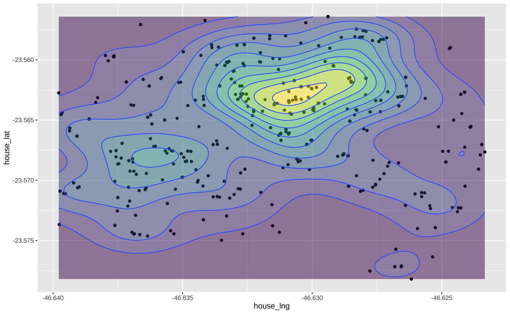
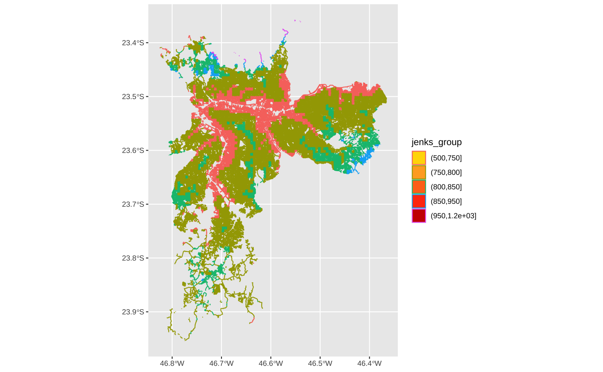
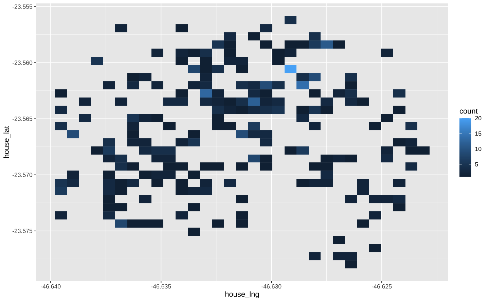
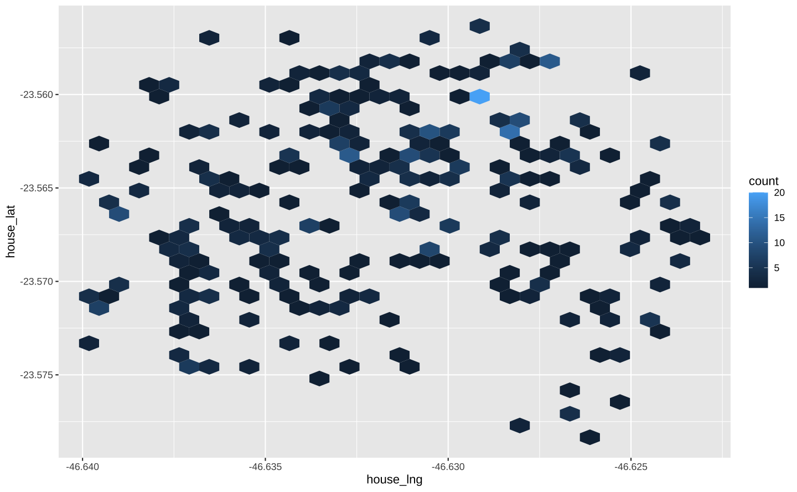

library(ggplot2)
library(sf)
library(dplyr)
sf::sf_use_s2(FALSE)
rent <- readr::read_csv(here::here("posts/ggplot2-tutorial/rents_liberdade.csv"))
cem <- readr::read_csv(here::here("static/data/cem_imoveis.zip"))Mapas
Eu começo este post com uma confissão: eu sofri muito até conseguir fazer mapas minimamente apresentáveis com o R. Há duas dificuldades bem sérias: primeiro, objetos geométricos são uma classe de objetos bastante complexa; segundo, há inúmeras convenções na elaboração de mapas que escapam completamente aos objetivos do economista.
No primeiro caso, o desafio é conseguir aprender o minimamente necessário para lidar com objetos espaciais. Neste sentido, não vou fingir que entendo o que significa CRS, EPSG, GDAL, etc. Apenas saiba que a Terra, infelizmente, não é plana, então é preciso sempre escolher algum tipo de projeção que mapeie nosso planeta tri-dimensional num plano bi-dimensional. Na prática, lembre-se dos números 4326, 4674 e 32722.
Felizmente, existe o pacote {sf} que funciona como um data.frame com uma coluna especial chamada geometry. É possível ignorar a existência desta coluna e trabalhar normalmente com seus dados, usando todo o seu conhecimento acumulado previamente com dados tabulares convencionais.
No segundo caso, das convenções, novamente, não vou fingir que eu entendo algo sobre cartografia, que me interesse fazer mapas com uma escala, com uma seta indicando o norte, com linhas paralelas indicando meridianos, etc. Saiba que tudo isto é muito possível de ser feito dentro do R e que eu não faço isso.
Este post é organizado em três blocos:
Quero apenas fazer um mapa interativo
Se o seu objetivo é fazer um mapa interativo não use ggplot. Comece explorando o leaflet. Se o objetivo for menos visualização e mais “ciência de dados” e você não quer perder horas customizando cores no {leaflet} use o {tmap} ou {mapview}.
library(leaflet)
leaflet() %>%
addTiles() %>%
setView(lng = -46.6554, lat = -23.5651, zoom = 13)Mapas com ggplot2
Mapas sem objetos espaciais
A abordagem mais simples para tratar dados espaciais é simplesmente tratá-los como dados tabulados quaisquer. Isto funciona perfeitamente bem para objetos geométricos na forma de pontos e linhas, mas torna-se impraticável no caso de polígonos.
No plano cartesiano, longitude e latitude são literalmente coordenadas; pode-se mapear estas coordenadas como pontos num gráfico de dispersão. No gráfico abaixo cada ponto é um imóvel, anunciado para aluguel. Você talvez possa argumentar que o gráfico abaixo não é um mapa, mas
ggplot(rent, aes(x = house_lng, y = house_lat)) +
geom_point()
A principal vantagem desta abordagem é que podemos aplicar todo o nosso conhecimento acumulado até agora.
ggplot(rent, aes(x = house_lng, y = house_lat)) +
geom_point(aes(color = log(rent))) +
scale_color_viridis_c()
ggplot(rent, aes(x = house_lng, y = house_lat)) +
geom_point() +
facet_wrap(vars(room))
Podemos inclusive acrescentar algumas novas funções que desenham mapas de calor (contorno).
ggplot(rent, aes(x = house_lng, y = house_lat)) +
geom_density_2d() +
theme(legend.position = "none")
ggplot(rent, aes(x = house_lng, y = house_lat)) +
geom_density_2d_filled() +
theme(legend.position = "none")
ggplot(rent, aes(x = house_lng, y = house_lat)) +
geom_density_2d(aes(color = as.factor(studio))) +
theme(legend.position = "none")
ggplot(rent, aes(x = house_lng, y = house_lat)) +
geom_density_2d_filled() +
theme(legend.position = "none") +
facet_wrap(vars(studio))
ggplot(rent, aes(x = house_lng, y = house_lat)) +
geom_point() +
geom_density_2d_filled(alpha = 0.5) +
geom_density_2d() +
theme(legend.position = "none")
Mapas com elementos de mapas
Para introduzir os mapas com “elementos de mapas”
library(osmdata)
## osmdata -----------------------------------------------------------------
# Define bbox
bbox <- getbb("Liberdade, São Paulo, Brazil")
# Base query
qr <- opq(bbox)
# Add feature requests to query
# All roads
qr_roads <- add_osm_feature(qr, key = "highway")
# Only big roads
qr_big_streets <- add_osm_feature(
qr,
key = "highway",
value = c("motorway", "primary", "motorway_link", "primary_link")
)
# Only medium roads
qr_med_streets <- add_osm_feature(
qr,
key = "highway",
value = c("secondary", "tertiary", "secondary_link", "tertiary_link")
)
# Only small roads
qr_small_streets <- add_osm_feature(
qr,
key = "highway",
value = c("residential", "living_street", "unclassified", "service",
"footway")
)
# Download
roads <- osmdata_sf(q = qr_roads)
big_streets <- osmdata_sf(q = qr_big_streets)
med_streets <- osmdata_sf(q = qr_med_streets)
small_streets <- osmdata_sf(q = qr_small_streets)
s1 <- big_streets$osm_lines %>%
st_transform(crs = 4674)
s2 <- med_streets$osm_lines %>%
st_transform(crs = 4674)
s3 <- small_streets$osm_lines %>%
st_transform(crs = 4674)ggplot() +
geom_sf(
data = s1,
key_glyph = draw_key_rect,
size = 2
) +
geom_sf(
data = s2,
key_glyph = draw_key_rect,
size = 0.6
) +
geom_sf(
data = s3,
key_glyph = draw_key_rect,
size = 0.45
)
ggplot() +
geom_sf(data = s1, key_glyph = draw_key_rect, size = 2) +
geom_sf(data = s2, key_glyph = draw_key_rect, size = 0.6) +
geom_sf(data = s3, key_glyph = draw_key_rect, size = 0.45) +
geom_point(
data = rent,
aes(x = house_lng, y = house_lat),
size = 0.4,
color = "#023047"
) +
geom_density_2d(
data = rent,
aes(x = house_lng, y = house_lat)
) +
labs(x = NULL, y = NULL) +
scale_x_continuous(expand = c(0,0)) +
scale_y_continuous(expand = c(0,0)) +
cowplot::theme_nothing()
border <- geobr::read_municipality(3550308)
Downloading: 770 B
Downloading: 770 B
Downloading: 1.2 kB
Downloading: 1.2 kB
Downloading: 1.8 kB
Downloading: 1.8 kB
Downloading: 1.9 kB
Downloading: 1.9 kB
Downloading: 1.9 kB
Downloading: 1.9 kB
Downloading: 2 kB
Downloading: 2 kB
Downloading: 3.1 kB
Downloading: 3.1 kB
Downloading: 4.4 kB
Downloading: 4.4 kB
Downloading: 15 kB
Downloading: 15 kB
Downloading: 28 kB
Downloading: 28 kB
Downloading: 48 kB
Downloading: 48 kB
Downloading: 69 kB
Downloading: 69 kB
Downloading: 94 kB
Downloading: 94 kB
Downloading: 120 kB
Downloading: 120 kB
Downloading: 150 kB
Downloading: 150 kB
Downloading: 180 kB
Downloading: 180 kB
Downloading: 200 kB
Downloading: 200 kB
Downloading: 250 kB
Downloading: 250 kB
Downloading: 300 kB
Downloading: 300 kB
Downloading: 300 kB
Downloading: 300 kB
Downloading: 330 kB
Downloading: 330 kB
Downloading: 370 kB
Downloading: 370 kB
Downloading: 380 kB
Downloading: 380 kB
Downloading: 420 kB
Downloading: 420 kB
Downloading: 460 kB
Downloading: 460 kB
Downloading: 500 kB
Downloading: 500 kB
Downloading: 530 kB
Downloading: 530 kB
Downloading: 570 kB
Downloading: 570 kB
Downloading: 610 kB
Downloading: 610 kB
Downloading: 640 kB
Downloading: 640 kB
Downloading: 680 kB
Downloading: 680 kB
Downloading: 750 kB
Downloading: 750 kB
Downloading: 800 kB
Downloading: 800 kB
Downloading: 830 kB
Downloading: 830 kB
Downloading: 900 kB
Downloading: 900 kB
Downloading: 980 kB
Downloading: 980 kB
Downloading: 1 MB
Downloading: 1 MB
Downloading: 1.1 MB
Downloading: 1.1 MB
Downloading: 1.1 MB
Downloading: 1.1 MB
Downloading: 1.1 MB
Downloading: 1.1 MB
Downloading: 1.1 MB
Downloading: 1.1 MB
Downloading: 1.2 MB
Downloading: 1.2 MB
Downloading: 1.2 MB
Downloading: 1.2 MB
Downloading: 1.2 MB
Downloading: 1.2 MB
Downloading: 1.3 MB
Downloading: 1.3 MB
Downloading: 1.4 MB
Downloading: 1.4 MB
Downloading: 1.4 MB
Downloading: 1.4 MB
Downloading: 1.4 MB
Downloading: 1.4 MB altitude <- elevatr::get_elev_raster(border, z = 7, clip = "bbox")
spo_alti <- raster::rasterToPolygons(altitude)
spo_alti <- sf::st_as_sf(spo_alti)
names(spo_alti)[1] <- "elevation"
spo_alti <- spo_alti %>%
st_transform(crs = 4674) %>%
st_intersection(border) %>%
filter(st_is_valid(.))
jbreaks <- BAMMtools::getJenksBreaks(spo_alti$elevation, k = 7)
breaks <- c(100, 500, 750, 800, 850, 950, 1200)
spo_alti <- spo_alti %>%
mutate(
jenks_group = cut(elevation, breaks)
)cores <- c(
"#ffd902", "#FFAB28", "#FF751B", "#FF3E0D", "#cc0600", "#a20d46", "#5f0078"
)
ggplot() +
geom_sf(data = spo_alti, aes(color = jenks_group, fill = jenks_group)) +
scale_color_manual(values = cores) +
scale_fill_manual(values = cores)
# Roads and Borders
border <- geobr::read_municipality(3550308)
bbox <- opq(bbox = "São Paulo Brazil")
roads <- add_osm_feature(
bbox,
key = "highway",
value = c("primary", "secondary", "tertiary", "residential")
)
roads_sf <- osmdata_sf(roads)
roads_sf <- roads_sf$osm_lines
roads_sf <- st_transform(roads_sf, crs = 4674)
roads_border <- st_intersection(roads_sf, border)
altitude <- elevatr::get_elev_raster(border, z = 7, clip = "bbox")
poly_alti <- raster::rasterToPolygons(altitude)
poly_alti <- sf::st_as_sf(poly_alti)
names(poly_alti)[1] <- "elevation"
spo_alti <- poly_alti %>%
st_transform(crs = 4674) %>%
st_intersection(roads_border) %>%
filter(st_is_valid(.))
jbreaks <- BAMMtools::getJenksBreaks(spo_alti$elevation, k = 7)
breaks <- c(100, 500, 750, 800, 850, 950, 1200)
spo_alti <- spo_alti %>%
mutate(
jenks_group = cut(elevation, breaks)
)ggplot() +
geom_sf(data = spo_alti, aes(color = jenks_group, fill = jenks_group)) +
scale_fill_manual(
values = c(
"#ffd902", "#FFAB28", "#FF751B", "#FF3E0D", "#cc0600", "#a20d46",
"#5f0078")
)
ggplot(rent, aes(x = house_lng, y = house_lat)) +
geom_bin2d()
ggplot(rent, aes(x = house_lng, y = house_lat)) +
geom_hex()
cem2010 <- filter(cem, ano_lanc == 2010)
ggplot(cem2010, aes(x = lon, y = lat)) +
geom_point(aes(size = emp_unid, color = pc_m2_au), alpha = 0.5) +
scale_color_viridis_c()
ggplot(rent, aes(x = house_lng, y = house_lat)) +
geom_point() +
geom_density_2d_filled(contour_var = "count") +
facet_wrap(vars(room))
Objetos espaciais
Após um longo e raivoso interlúdio chegamos, finalmente, aos mapas estáticos que utilizam, de fato, objetos espaciais.